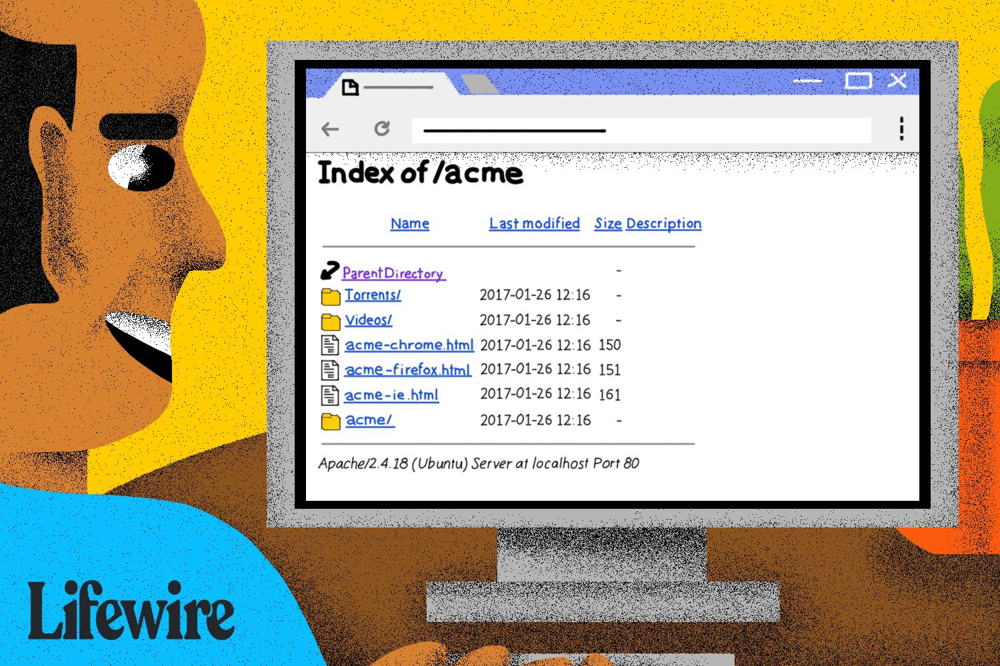

Web development involves building and maintaining websites and web applications, encompassing frontend (UI/UX),
backend (server-side logic), and full-stack development. It differs from web design, which focuses on aesthetics
rather than functionality. Essential skills include problem-solving, coding proficiency, and an understanding of
design principles. The development process includes planning, design, coding, testing, and deployment. While
challenging, web development is accessible through education, hands-on practice, and continuous learning, offering
rewarding career opportunities.
Relevance
The article is highly relevant for anyone interested in web development, whether beginners exploring the field or
professionals looking to refine their skills. It provides a clear understanding of web development's key components,
the necessary skills, and the career opportunities available. As technology continues to evolve, web development
remains a crucial industry, shaping digital experiences across businesses, services, and everyday interactions. By
outlining the development process and learning pathways, the article serves as a valuable guide for aspiring
developers in an ever-growing and in-demand field.
The article "Can Traditional Web Development Survive AI?" explores how artificial intelligence (AI) is transforming
the web development landscape. AI automates routine tasks, such as coding and debugging, allowing developers to
focus more on creative and strategic aspects of design. For instance, AI-powered analytics can analyze user behavior
to suggest layout changes that enhance user engagement and conversion rates. Despite these advancements, human
insight remains crucial for understanding nuanced user needs and delivering customized solutions. The integration of
AI is seen not as a replacement but as an evolution, empowering developers to create more innovative and
user-centric web experiences.
Relevance
This article is highly relevant as AI continues to reshape the web development landscape. By automating routine
coding tasks and optimizing user experiences through data-driven insights, AI is streamlining the development
process. However, the article highlights that human expertise remains essential for creativity, problem-solving, and
understanding user needs. Rather than replacing traditional web development, AI serves as a powerful tool that
enhances efficiency and innovation. This discussion is crucial for developers and businesses adapting to the
evolving digital space.
Create Your First Local HTML/CSS Project

Kickstart Your Web Design: Your First Local HTML/CSS Project
The article "Create Your First Local HTML/CSS Project" from Codecademy provides a step-by-step guide for beginners to
build a basic web page using HTML and CSS on their local machines. It covers setting up a structured folder system,
creating and linking HTML and CSS files, and viewing the project in a web browser. This hands-on approach helps
learners apply their coding skills outside of an online environment, fostering a deeper understanding of web
development fundamentals.
Relevance
The article is highly relevant for beginners looking to start their journey in web development. It provides a
practical, hands-on approach to creating a simple HTML/CSS project on a local machine, reinforcing core web
development skills. By guiding learners through the process of setting up a project, writing basic code, and viewing
it in a browser, the article helps build confidence and foundational knowledge essential for further development in
web design and development. It's a great starting point for anyone wanting to dive into the world of web development
outside of online environments.
The article explains how to create a website using GitHub Pages, which allows you to host a site for free. It covers
creating a repository, adding HTML files, and making your site accessible through a personal URL (e.g.,
username.github.io). It also includes instructions on troubleshooting and updating your site, as well as customizing
it with HTML and CSS. The process is beginner-friendly and doesn't require command-line knowledge.
Relevance
This article is highly relevant for beginners interested in web development, as it provides an easy-to-follow guide
for creating and hosting a website for free on GitHub Pages. It introduces key concepts such as setting up a
repository, adding content, and customizing a website with HTML and CSS. By walking users through the process, it
empowers them to start building their own online presence without needing advanced technical skills.